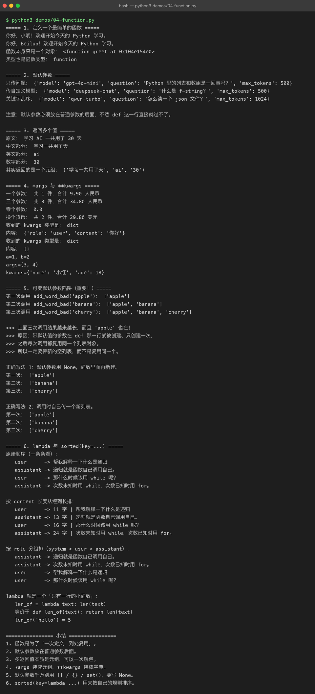
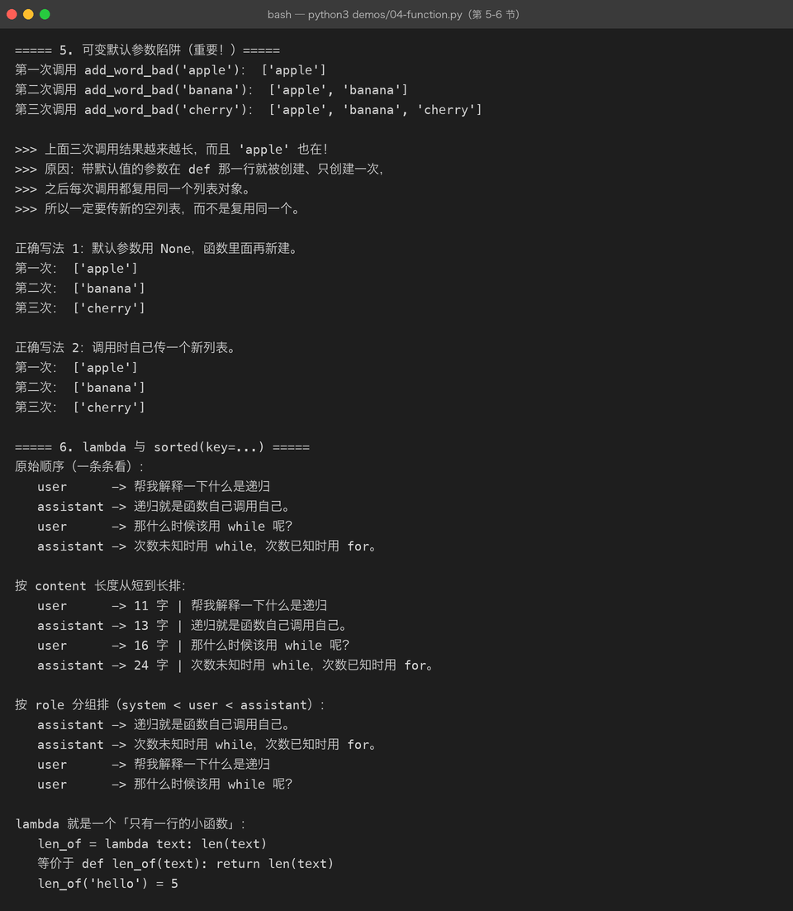

Lesson 04 — Function：把 AI CLI Assistant 从“能跑”变成“可维护”
AI Engineer Journey · Project 01 — Python AI CLI Assistant 学习方式：Project-Based Learning【项目驱动学习】 主线项目：Python AI CLI Assistant 本章目标：通过重构已有项目，理解函数、参数、返回值、作用域，并建立最基本的代码模块化思维。
1. 这一次我们遇到了什么问题？
上一章，我们让 AI CLI Assistant 真正“跑起来”。
现在程序已经支持：
/help
/history
/clear
/exit代码大概会变成：
while True:
user_input = input("You: ")
if user_input == "/exit":
...
if user_input == "/help":
...
if user_input == "/history":
...
if user_input == "/clear":
...
...现在如果继续增加：
/size
/last
/save
/load
/model
/config会发生什么？
代码会越来越长。
最终可能变成：
main.py
│
├── 输入
├── /help
├── /history
├── /clear
├── /exit
├── /size
├── /last
├── /save
├── /load
├── 模型调用
├── 错误处理
└── 输出这时候问题已经不是“代码能不能运行”。
而是：
代码还能不能维护？
2. 项目需求：把不同职责拆开
我们希望把：
显示帮助
显示历史
清空历史
保存消息
读取消息拆成独立的功能。
于是我们需要：
Function【函数】
可以先把函数理解成：
给一段有明确职责的代码起一个名字，让它可以重复调用。
3. 先从一个真实需求开始
我们的 Assistant 经常需要打印欢迎信息。
现在可能写：
print("====================================")
print(" AI Engineer CLI Assistant")
print(" 输入 /help 查看帮助")
print("====================================")假设以后程序启动很多地方都要显示这个欢迎界面。
我们可以把它变成：
def show_banner():
print("====================================")
print(" AI Engineer CLI Assistant")
print(" 输入 /help 查看帮助")
print("====================================")然后：
show_banner()运行：
====================================
AI Engineer CLI Assistant
输入 /help 查看帮助
====================================这就是我们的第一个函数。
4. def 是什么？
Python：
def show_banner():
...def：
define【定义】
表示：
我要定义一个函数。
结构：
def 函数名():
函数内部代码例如：
def say_hello():
print("Hello")调用：
say_hello()5. 函数最重要的思想：职责
一个好的函数通常解决一个明确问题。
例如：
show_banner()负责：
显示欢迎信息。
show_help()负责：
显示帮助。
show_history()负责：
显示聊天历史。
clear_history()负责：
清空聊天历史。
于是原来的大程序逐渐变成：
AI CLI Assistant
│
├── show_banner()
├── show_help()
├── show_history()
├── clear_history()
└── main_loop()这就是最基础的：
Modularity【模块化】
虽然我们现在还没有正式拆成多个 Python 文件，但已经开始建立模块化思维。
6. 第一个函数：show_help()
现在项目需求：
/help显示：
可用命令：
/help
/history
/clear
/size
/last
/exit直接写：
def show_help():
print("""
可用命令：
/help
/history
/clear
/size
/last
/exit
""")然后：
show_help()7. 把 /history 变成函数
上一章：
if user_input == "/history":
for message in messages:
print(
f"{message['role']}: "
f"{message['content']}"
)
continue现在改成：
def show_history(messages):
print("\n========== Conversation ==========")
for message in messages:
print(
f"{message['role']}: "
f"{message['content']}"
)
print("===================================")调用：
show_history(messages)这里出现了函数非常重要的东西：
Parameter【参数】
8. 为什么需要参数？
看看：
def show_history(messages):这里的：
messages就是参数。
因为 show_history() 不知道：
你到底要显示哪个聊天记录？
所以调用时：
show_history(messages)把当前的 messages 传进去。
可以理解：
messages
↓
show_history()
↓
遍历
↓
输出9. Java 开发者怎么理解参数？
Java：
void showHistory(List<Map<String, String>> messages) {
...
}Python：
def show_history(messages):
...你可以看到：
Python 的函数参数定义更加简洁。
后面我们会学类型标注（Type Hint），让它变得更加明确。
现在先掌握：
函数可以接收数据。
10. 参数可以有多个
例如我们的 Assistant 想打印：
[USER] 你好可以：
def print_message(role, content):
print(f"[{role}] {content}")调用：
print_message("user", "你好")
print_message("assistant", "你好，有什么可以帮助你？")输出：
[user] 你好
[assistant] 你好，有什么可以帮助你？所以：
函数
↓
可以接收一个参数
↓
也可以接收多个参数

11. 一个非常重要的区别：参数 vs 实际传入值
例如：
def print_message(role, content):
...这里：
role
content是：
参数（Parameter）
调用：
print_message("user", "你好")这里：
"user"
"你好"是：
实际参数值 / Arguments【实参】
现在先简单记：
定义时：
参数
调用时：
传入值12. 项目又遇到了一个问题
现在：
def show_history(messages):
...这个函数做完事情后：
它只是打印。
但是有时候我们希望函数：
处理完数据后，把结果交给别人。
例如：
messages
↓
统计消息数量
↓
返回数量于是出现：
return【返回值】
13. 第一个返回值函数
需求：
获取当前聊天记录有多少条消息。
写：
def get_message_count(messages):
return len(messages)调用：
count = get_message_count(messages)
print(count)例如：
3这里发生了：
messages
↓
get_message_count()
↓
计算
↓
return
↓
count14. return 到底做了什么？
def add(a, b):
return a + b调用：
result = add(10, 20)那么：
a = 10
b = 20
↓
10 + 20
↓
30
↓
return
↓
result = 30所以：
return把函数计算得到的结果交给调用者。
15. print() 和 return 不一样
这是非常重要的区别。
print()
def add(a, b):
print(a + b)调用：
result = add(10, 20)屏幕可能看到：
30但是：
result实际上没有得到 30。
return
def add(a, b):
return a + b调用：
result = add(10, 20)现在：
result = 30所以：
print()是展示结果，return是把结果交给程序继续处理。
这个区别以后开发 AI 应用非常重要。
16. 真实 AI 项目里的区别
例如：
def generate_answer():
answer = "你好"
print(answer)这个函数只能显示答案。
但如果：
def generate_answer():
answer = "你好"
return answer那么调用方可以：
answer = generate_answer()
save_to_history(answer)
send_to_frontend(answer)
evaluate_answer(answer)这就是为什么工程代码更依赖 return。
17. 项目升级：保存消息的函数
现在我们每次都写：
message = {
"role": "user",
"content": user_input
}
messages.append(message)可以封装：
def add_message(messages, role, content):
message = {
"role": role,
"content": content
}
messages.append(message)调用：
add_message(
messages,
"user",
"你好"
)现在整个职责非常明确：
add_message()负责向消息列表添加一条消息。
18. 为什么函数让项目变得更好？
以前：
while
↓
if
↓
创建 dict
↓
append现在：
while
↓
add_message()代码阅读变成：
用户输入
↓
add_message()这就是：
Abstraction【抽象】
你暂时不需要关心：
Dict 怎么创建？
append 怎么调用？只需要知道：
add_message()的职责是“添加一条消息”。
19. 这就是函数真正的价值
不是：
“代码少了几行。”
真正的价值是：
把复杂实现
隐藏在
一个有意义的名字后面例如：
show_history(messages)比：
一大堆 for + print更容易理解。
20. 现在重构整个项目
我们已经拥有：
show_banner()
show_help()
show_history(messages)
clear_history(messages)
add_message(messages, role, content)
get_message_count(messages)接下来把主程序重新组织。
21. clear_history()
def clear_history(messages):
messages.clear()调用：
clear_history(messages)职责：
清空历史。
22. get_message_count()
def get_message_count(messages):
return len(messages)调用：
count = get_message_count(messages)
print(f"当前共有 {count} 条消息。")23. show_last_message()
上一章 Challenge 要实现：
/last现在正好用函数。
def show_last_message(messages):
if not messages:
print("AI: 当前没有聊天记录。")
return
last_message = messages[-1]
print(
f"AI: 最后一条消息："
f"{last_message['role']}: "
f"{last_message['content']}"
)这里出现了：
if not messages:它的意思是：
如果
messages为空。
暂时先把它理解为：
空列表
→ False
有内容的列表
→ True后面会系统学习 Python 的真假判断。
24. messages[-1] 是什么？
如果：
messages = [
"A",
"B",
"C"
]那么：
messages[-1]得到：
C因为 Python 支持：
负数索引【Negative Index】
-1 → 最后一个
-2 → 倒数第二个
-3 → 倒数第三个这个能力以后处理消息历史非常有用。
25. 开始重构主程序
现在我们的代码逻辑可以变成：
messages = []
show_banner()
while True:
user_input = input("You: ")
if user_input == "/exit":
print("AI: 再见！")
break
if user_input == "/help":
show_help()
continue
if user_input == "/history":
show_history(messages)
continue
if user_input == "/clear":
clear_history(messages)
print("AI: 聊天记录已清空。")
continue
if user_input == "/size":
count = get_message_count(messages)
print(f"AI: 当前共有 {count} 条消息。")
continue
if user_input == "/last":
show_last_message(messages)
continue
add_message(
messages,
"user",
user_input
)
print("AI: 我收到你的消息了。")你会发现：
主流程突然变得非常容易读。
26. 这就是所谓“控制层”和“实现层”
现在可以粗略理解为：
主循环
↓
决定“做什么”
函数
↓
具体“怎么做”例如：
/history
↓
show_history()主循环只负责判断：
用户执行了
/history。
具体怎么展示历史：
show_history()自己负责。
这是非常重要的软件设计思想。
27. Java 开发者可以这样理解
Java 项目里面通常不会把所有代码都写进：
public static void main(String[] args)而是：
main
↓
service
↓
repository
↓
utilsPython 现在也开始建立类似思想：
main loop
↓
function
↓
function
↓
function后面继续学习：
module
package
class之后，我们会真正拆成：
main.py
llm.py
conversation.py
config.py所以：
Lesson 04 是从“写 Python 脚本”走向“写 Python 工程”的第一步。
28. 一个新问题：函数里的变量去哪了？
例如：
def show_banner():
title = "AI Engineer CLI Assistant"
print(title)外面：
print(title)可能会报错。
为什么？
因为：
title是在函数内部创建的变量。
这涉及：
Scope【作用域】
29. 暂时只掌握最基本的作用域
例如：
def test():
x = 10
print(x)函数内部：
print(x)可以。
外部：
print(x)不一定可以，因为：
x属于函数内部作用域。
你现在先记住：
函数内部定义的变量
→ 默认只在函数内部使用后面学习模块和类时，我们会继续深入。
30. 参数为什么能解决这个问题？
看看：
def show_history(messages):
...虽然 messages 是函数内部使用的名字：
但它来自外部：
show_history(messages)所以参数提供了一条数据进入函数的通道：
外部数据
↓
参数
↓
函数内部而：
return result则是一条从函数内部出去的通道：
函数内部
↓
return
↓
外部于是可以把函数理解成：
Function
┌──────────────┐
数据 → 参数 │
│ │
│ 处理 │
│ ↓
│ return
└──────────────┘这个模型非常值得记住。
31. 项目里的真实应用
例如：
def build_message(role, content):
return {
"role": role,
"content": content
}调用：
message = build_message(
"user",
"什么是 Python？"
)得到：
{
"role": "user",
"content": "什么是 Python？"
}然后：
messages.append(message)于是：
用户输入
↓
build_message()
↓
Dict
↓
return
↓
messages.append()这已经非常接近未来 LLM API 的代码结构。
32. 第二个重要项目实验：Assistant 模拟回答
现在可以写：
def generate_mock_response(user_input):
return f"我收到你的问题了：{user_input}"调用：
answer = generate_mock_response(user_input)然后：
add_message(
messages,
"assistant",
answer
)这样聊天记录就不再只有：
user
user
user而是：
user
assistant
user
assistant
user
assistant33. 完整的 v0.4 版本
现在组合起来：
def show_banner():
print("====================================")
print(" AI Engineer CLI Assistant")
print(" 输入 /help 查看帮助")
print("====================================")
def show_help():
print("""
可用命令：
/help
/history
/clear
/size
/last
/exit
""")
def show_history(messages):
print("\n========== Conversation ==========")
if not messages:
print("暂无消息。")
else:
for message in messages:
print(
f"{message['role']}: "
f"{message['content']}"
)
print("===================================")
def clear_history(messages):
messages.clear()
def get_message_count(messages):
return len(messages)
def show_last_message(messages):
if not messages:
print("AI: 当前没有聊天记录。")
return
last_message = messages[-1]
print(
f"AI: 最后一条消息："
f"{last_message['role']}: "
f"{last_message['content']}"
)
def add_message(messages, role, content):
message = {
"role": role,
"content": content
}
messages.append(message)
def generate_mock_response(user_input):
return f"我收到你的问题了：{user_input}"
messages = []
show_banner()
while True:
user_input = input("\nYou: ")
if user_input == "/exit":
print("AI: 再见！")
break
if user_input == "/help":
show_help()
continue
if user_input == "/history":
show_history(messages)
continue
if user_input == "/clear":
clear_history(messages)
print("AI: 聊天记录已清空。")
continue
if user_input == "/size":
count = get_message_count(messages)
print(f"AI: 当前共有 {count} 条消息。")
continue
if user_input == "/last":
show_last_message(messages)
continue
add_message(
messages,
"user",
user_input
)
answer = generate_mock_response(user_input)
add_message(
messages,
"assistant",
answer
)
print(f"AI: {answer}")34. 运行效果
====================================
AI Engineer CLI Assistant
输入 /help 查看帮助
====================================
You: 你好
AI: 我收到你的问题了：你好
You: 我正在学习 Python
AI: 我收到你的问题了：我正在学习 Python
You: /size
AI: 当前共有 4 条消息。
You: /last
AI: 最后一条消息：assistant: 我收到你的问题了：我正在学习 Python
You: /history
========== Conversation ==========
user: 你好
assistant: 我收到你的问题了：你好
user: 我正在学习 Python
assistant: 我收到你的问题了：我正在学习 Python
===================================注意：
这里的
generate_mock_response()还不是大模型。
它只是一个：
Mock Response【模拟响应】
我们故意这样做。
因为现在的重点是：
Python 函数下一阶段再把：
generate_mock_response()替换成：
LLM API这样知识不会跳跃。
35. 一个非常重要的工程思想：替换实现
现在：
def generate_mock_response(user_input):
return f"我收到你的问题了：{user_input}"以后：
def generate_response(user_input):
# 调用 LLM API
...主循环可能基本不用改：
answer = generate_response(user_input)这就是函数带来的一个巨大价值：
调用方不需要知道内部实现。
今天：
Mock明天：
OpenAI-compatible API后天：
本地 Ollama再后来：
vLLM调用接口都可以尽量保持稳定。
这就是：
Abstraction【抽象】
36. 本章知识地图
AI CLI Assistant
│
↓
main loop
│
├── show_banner()
│
├── show_help()
│
├── show_history(messages)
│
├── clear_history(messages)
│
├── get_message_count(messages)
│
├── show_last_message(messages)
│
├── add_message(...)
│
└── generate_mock_response(...)联系描述
主循环负责控制程序运行和决定当前需要执行哪个动作，而每个函数只负责一个明确职责。外部数据通过参数进入函数，函数处理完成后可以通过 return 把结果交给调用者。这样主循环不需要知道每个功能内部的实现细节，程序开始具备基本的模块化和抽象能力。以后接入真正的 LLM API 时，只需要替换模型响应相关函数，而不用把整个 CLI 程序重新写一遍。
37. 本章几个核心概念
Function【函数】
一段具有明确职责、可以重复调用的代码。
Parameter【参数】
函数接收外部数据的入口。
def show_history(messages):messages 就是参数。
Argument【实参】
调用函数时真正传进去的数据：
show_history(messages)Return【返回值】
函数将结果交给调用者：
return resultScope【作用域】
决定变量在哪些代码范围内可以访问。
本章先掌握：
函数内部变量默认属于函数内部。
Abstraction【抽象】
隐藏复杂实现，只暴露清晰的功能接口。
例如：
generate_response(user_input)调用方只关心：
“帮我生成回答。”
不需要关心里面到底是 Mock、API 还是本地模型。
38. Java → Python 对照
| Java | Python |
|---|---|
方法 method() | 函数 function() |
| 参数 | parameter |
| 返回值 | return |
void | 可以没有 return，默认返回 None |
方法体 {} | 缩进代码块 |
| 方法重载 | Python 不采用 Java 式传统方法重载 |
| 局部变量 | 函数内部局部变量 |
注意：
Python 的函数机制比 Java 方法简单很多，但后面会逐渐学：
默认参数
关键字参数
可变参数
lambda
高阶函数
类型标注现在不要提前展开。
39. 本章主动回忆
不要回头看正文，先自己回答。
Q1
为什么我们的 AI CLI Assistant 需要函数？
不要回答：
“因为函数可以复用。”
请结合项目具体说明。
Q2
下面：
def show_history(messages):messages 是什么？
Q3
下面：
count = get_message_count(messages)为什么需要 return？
如果 get_message_count() 里面只有：
print(len(messages))会发生什么？
Q4
解释：
message = build_message(
"user",
"你好"
)数据是怎么进入函数，又怎么出来的？
Q5
为什么我们现在故意使用：
generate_mock_response()而不是立刻连接大模型 API？
Q6
结合本项目解释：
Function
Parameter
Return
Scope
Abstraction分别解决什么问题？
40. 本章 Challenge：自己重构
不要复制上面的最终代码。
从上一章的 v0.3 开始自己重构。
至少拆出：
show_banner()
show_help()
show_history()
clear_history()
add_message()
get_message_count()然后增加：
/last要求 /last 使用独立函数。
41. Challenge 2：增加“用户消息 + 模拟 AI 回复”
普通输入：
You: 什么是 Python？程序：
AI: 我收到你的问题了：什么是 Python？要求：
user message
+
assistant message都进入：
messages所以最终：
user
assistant
user
assistant而不是只保存 User Message。
42. Challenge 3：让函数真正返回结果
写：
def generate_mock_response(user_input):
...要求：
函数内部不要直接
print()最终答案，而是使用return。
外部：
answer = generate_mock_response(user_input)再：
print(f"AI: {answer}")这样你可以亲手理解：
Function
↓
return
↓
调用方
↓
继续处理43. 本章完成标准
Level 1
知道什么是函数。
Level 2
能够自己写：
def hello():
print("Hello")Level 3
能够传参数：
def hello(name):
print(f"Hello {name}")Level 4
能够返回：
def add(a, b):
return a + bLevel 5
能够把 AI CLI Assistant 的重复逻辑拆成多个函数。
Level 6
能够解释：
为什么
return比直接print()更适合工程代码？
Level 7
不看答案，自己完成：
AI CLI Assistant v0.4
并保留：
v0.3
→ 控制流
v0.4
→ 函数化44. 本章与下一章的连接
现在项目已经从：
一个大脚本变成：
main loop
↓
多个函数但问题又出现了：
这些函数全部写在一个
main.py里，还是越来越长。
于是下一章自然进入：
Lesson 05 — Module / Package：把 AI CLI Assistant 拆成真正的 Python 项目
我们会把：
main.py逐步拆成：
main.py
config.py
conversation.py
assistant.py理解：
Module【模块】
Package【包】
import
from ... import ...同时你会第一次真正感受到：
Python 从“写脚本”开始进入“做工程”。
再下一步，我们就可以继续学习：
文件
JSON
环境变量
HTTP
API然后把现在的：
generate_mock_response()替换成真正的：
LLM API 调用。
所以从 Lesson 01 到现在，你的路线其实一直没有断：
学习档案
↓
List / Dict
↓
Messages
↓
while / if
↓
Function
↓
Module
↓
HTTP
↓
LLM API这就是我们整个 AI Engineer Journey 的“项目驱动”主线。